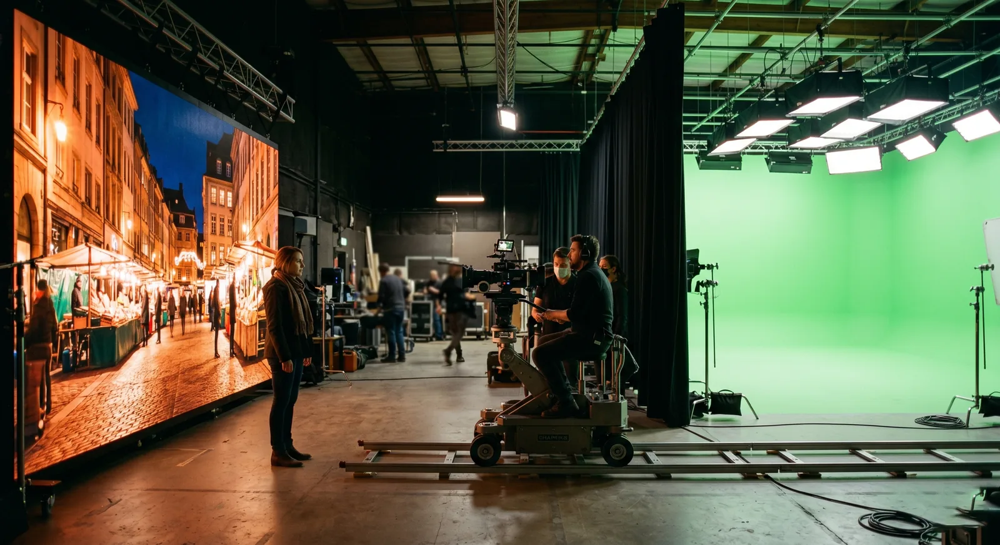
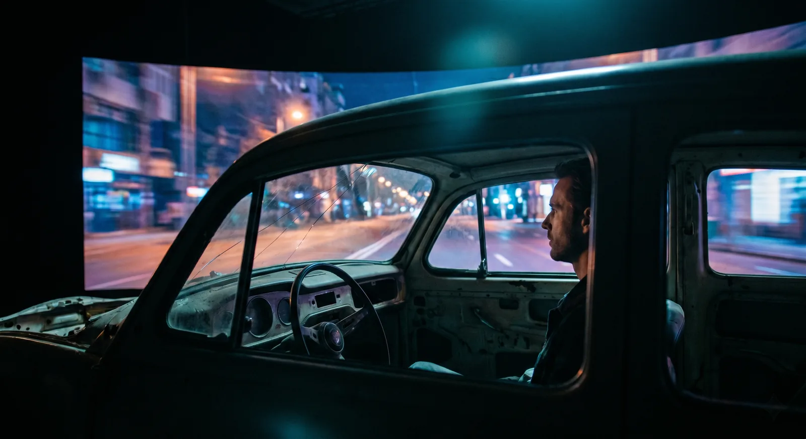

Here is the short version: if the actor needs to see and react to the world behind them, light the scene from it, or catch a reflection of it, the LED volume wins. If the background gets fully rebuilt in post and the foreground does not interact with it, green screen is cheaper and often better. Cineva by Apex Sound & Light runs both, and the honest answer is shot-dependent.
This is the question producers ask us first, so we will answer it straight instead of selling a wall into every job. The deciding factor is not the budget line. It is what the foreground has to do with the background.
Reaction and light
A volume puts the environment on the stage while you roll. The actor sees the cliff edge, the city at night, the headlights coming. That read lands on a face in a way a tennis ball on a stand never will, and it lands in camera, not three months later in a review. The same wall throws real light: a sunset washes warm across skin, a neon sign kicks the right colour onto a wet jacket, a sky bounces soft fill from above. Green screen does the opposite. It spills green onto everything near it, and you spend grip time and grade time flagging and fixing the contamination.
Reflections are the clean tell. Glass, water, a car windshield, a helmet visor, polished metal: anything that mirrors the world has to carry the world. On a volume it just does, because the world is there. On green it has to be tracked, masked, and rebuilt, and a busy reflection is where green-screen comps go to die.
Where green wins
Green screen still earns its keep, and we will say so. When the background is a full digital build that does not exist yet, when the camera flies through a space no wall could hold, when you need to replace the environment frame by frame with total control, green is the right tool. It is forgiving of scale. A small cyc can stand in for a canyon. It is cheap to put up and quick to strike. And for a flat, far-off, soft background that never interacts with the foreground, a volume is paying for precision the shot will never use.
The trade is schedule and post load. Green moves the work downstream. The plate, the key, the spill cleanup, the relight to match a background nobody saw on set: that all lands in post, and it lands on a clock. A volume front-loads the work into prep and pays it back on the day, with the shot finished in camera and the look approved while the set is still standing.
What it really costs
Sticker price misleads here. Green looks cheaper because the cheap part happens on the floor: a cyc and a key cost little on the day. The bill lands later, in post, where the plate, the key, the spill cleanup, and the relight to match a background nobody saw on set all run on a clock, and where one client note can mean a fresh comp or a reshoot. A volume front-loads that spend into prep and finishes the shot in camera, so the look is approved while the set still stands.
The savings that never show up on the rental line are the real ones. A convincing world on the wall can stand in for a location, so you are not flying cast and crew to it, permitting it, or losing days to weather, and fewer surprises in post means fewer reshoots. So when you weigh green against the volume, compare the whole path to the finished shot, not the day rate. That is where the alternatives to green screen actually pay off, or where they do not, and we will run that math with you on a walkthrough.

The hybrid case
The smartest builds use both. Put the volume where the interaction lives, the windows of a moving car, the reactive light on the actors, the reflections that have to be right, and leave a green panel where you want post to extend the world past the wall or swap a detail later. A car interior is the textbook hybrid: the volume fills the windows with a driving plate so reflections and light read true, while a clean edge lets post stretch the road beyond the frame. You get the in-camera win where it counts and the post flexibility where you want it.
One line to take away: the volume is for what the camera has to believe in the moment, green is for what post will rebuild later. Most shows have both, and the schedule is the real arbiter. We will not put a wall behind a flat far-off background just to put a wall there. We will spec the cheaper path when the cheaper path is right, and we will tell you which is which on a walkthrough with your shot list in hand.